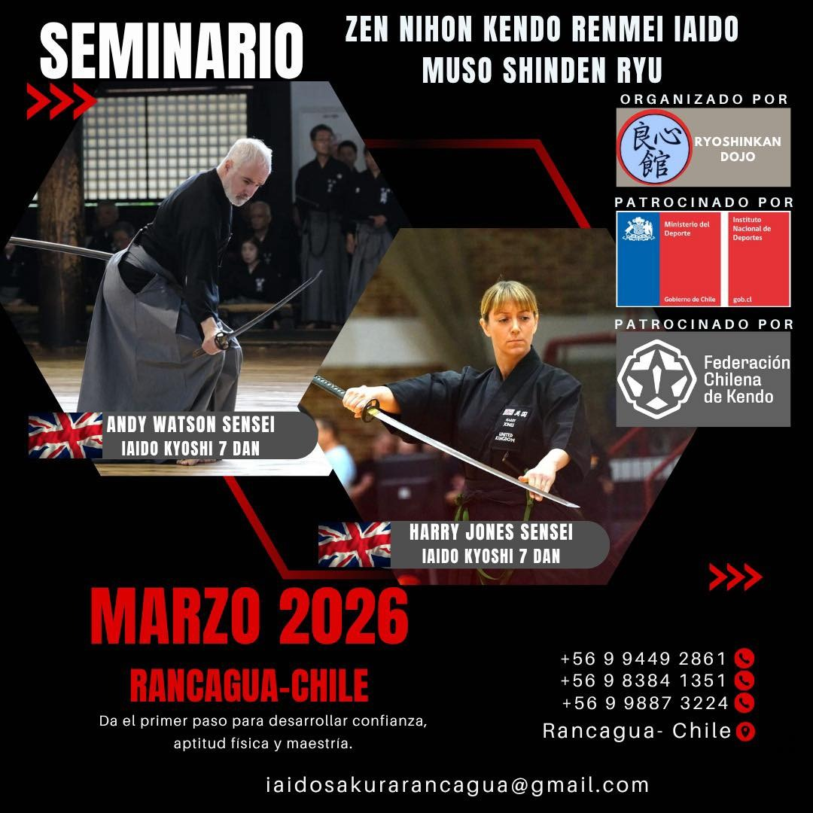

Notícias
Seminário Internacional de ZNKR Iai e Muso Shinden Ryu e Primeiro Campeonato de Iaido Koryu - Rancagua, Chile
Foto de divulgação do Seminário Internacional de ZNKR. Rancagua, Chile. 2026.
23/01/2026
Em março de 2026 a cidade de Rancagua, no Chile, sediará o Seminário Internacional de ZNKR Iai e Muso Shinden Ryu, além de realizar o primeiro campeonato de Koryu do Chile.
O evento conta com a orientação de Andy Watson Sensei (Kyoshi 7° Dan Iaido, Kyoshi 7° Dan Jodo) e Harry Jones Sensei (Kyoshi 7° Dan Iaido, Kyoshi 7° Dan Jodo). Data: 13 / 14 / 15 de março de 26Local: Rancagua, Chile
Maiores informações